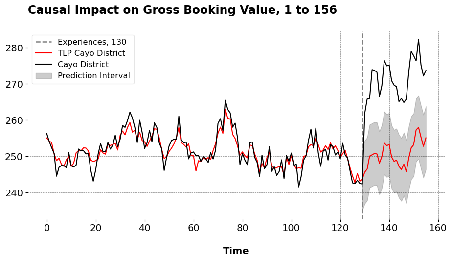

Synthetic Control Methods With Multiple Outcomes
Causal Inference
Econometrics
Sometimes, analysts have multiple different metrics at their disposal with which to estimate synthetic control models. That is, multiple relevant variables may predict…
Notation
Let \(\mathbb{R}\) denote the set of real numbers. A calligraphic letter, such as \(\mathcal{S}\), represents a discrete set with cardinality \(S = |\mathcal{S}|\). Let \(\mathbf{C}_T \in \mathbb{R}^{T \times T}\) represent the centering matrix, defined as:
\[ \mathbf{C}_T \coloneqq \mathbf{I}_T - \frac{1}{T} \mathbf{1}_T \mathbf{1}_T^\top \]
where \(\mathbf{I}_T\) is the identity matrix of size \(T\), and \(\mathbf{1}_T \in \mathbb{R}^T\) is the vector of ones of length \(T\). For any vector \(\mathbf{x} \in \mathbb{R}^T\), the demeaned version is:
\[ \widetilde{\mathbf{x}} \coloneqq \mathbf{C}_T \mathbf{x} \]
For any pair of vectors \(\mathbf{a}, \mathbf{b} \in \mathbb{R}^{N_0}\), we define the Hadamard (elementwise) product as:
\[ (\mathbf{a} \odot \mathbf{b})_j \coloneqq a_j b_j \quad \forall j \in \mathcal{N}_0 \]
When multiplying a matrix \(\mathbf{A} \in \mathbb{R}^{T \times N_0}\) by a vector \(\mathbf{b} \in \mathbb{R}^{N_0}\), the result is a new vector in \(\mathbb{R}^T\), formed as a linear combination of the columns of \(\mathbf{A}\):
\[ \mathbf{A} \mathbf{b} = \sum_{j \in \mathcal{N}_0} b_j \mathbf{A}_{:,j} \in \mathbb{R}^T \]
Here, each entry in the resulting vector is a dot product between a row of \(\mathbf{A}\) and the vector \(\mathbf{b}\).
Let \(j \in \mathbb{N}\) represent indices for a total of \(N\) units and \(t \in \mathbb{N}\) index time. Let \(j = 1\) denote the treated unit, with the set of controls being \(\mathcal{N}_0 = \mathcal{N} \setminus \{1\}\), with cardinality \(N_0\). The pre-treatment period consists of the set \(\mathcal{T}_1 = \{ t \in \mathbb{N} : t \leq T_0 \}\), where \(T_0\) is the final period before treatment. Similarly, the post-treatment period is given by \(\mathcal{T}_2 = \{ t \in \mathbb{N} : t > T_0 \}\).
The observed outcome for unit \(j\) at time \(t\) is \(y_{jt}\), where a generic outcome vector for a given unit in the dataset is:
\[ \mathbf{y}_j \in \mathbb{R}^T, \quad \mathbf{y}_j = (y_{j1}, y_{j2}, \dots, y_{jT})^\top \in \mathbb{R}^T \]
The outcome vector for the treated unit specifically is \(\mathbf{y}_1\). The donor matrix is defined as:
\[ \mathbf{Y}_0 \coloneqq \begin{bmatrix} \mathbf{y}_j \end{bmatrix}_{j \in \mathcal{N}_0} \in \mathbb{R}^{T \times N_0} \]
where each column indexes a donor unit and each row corresponds to a time period. We denote by \(\mathbf{y}_j^{\text{pre}} \in \mathbb{R}^{T_0}\) the subvector of outcomes for unit \(j\) in the pre-treatment period, and by \(\mathbf{y}_j^{\text{post}} \in \mathbb{R}^{T_1}\) the corresponding post-treatment vector, where \(T_1 = T - T_0\). Then, we define our pre- and post-intervention analogs for the data:
\[ \mathbf{y}_1^{\text{pre}} = (y_{1t})_{t \in \mathcal{T}_1} \in \mathbb{R}^{T_0}, \quad \mathbf{y}_1^{\text{post}} = (y_{1t})_{t \in \mathcal{T}_2} \in \mathbb{R}^{T_1} \]
\[ \mathbf{Y}_0^{\text{pre}} = \left[ \mathbf{y}_j^{\text{pre}} \right]_{j \in \mathcal{N}_0} \in \mathbb{R}^{T_0 \times N_0}, \quad \mathbf{Y}_0^{\text{post}} = \left[ \mathbf{y}_j^{\text{post}} \right]_{j \in \mathcal{N}_0} \in \mathbb{R}^{T_1 \times N_0} \]
Multiple Outcomes Notation
For the case of multiple outcomes, let \(k\) denote the number of outcomes being used. For each outcome \(m \in \{1, 2, \dots, k\}\), we have:
\[ \mathbf{Y}_0^{(m)} \in \mathbb{R}^{T \times N_0} \quad \text{and} \quad \mathbf{y}_1^{(m)} \in \mathbb{R}^{T} \]
where \(\mathbf{Y}_0^{(m)}\) is the donor matrix for outcome \(m\), and \(\mathbf{y}_1^{(m)}\) is the outcome vector for the treated unit for the \(m\)-th outcome. Similarly, for the pre-treatment and post-treatment periods, we define:
\[ \mathbf{Y}_0^{(m), \text{pre}} \in \mathbb{R}^{T_0 \times N_0}, \quad \mathbf{Y}_0^{(m), \text{post}} \in \mathbb{R}^{T_1 \times N_0} \]
and
\[ \mathbf{y}_1^{(m), \text{pre}} \in \mathbb{R}^{T_0}, \quad \mathbf{y}_1^{(m), \text{post}} \in \mathbb{R}^{T_1} \]
Here are our objective functions (I use an intercept practically, but I’m just showing what’s going on under the hood)
\[ \underset{\mathbf{w} \in \mathcal{W}}{\operatorname*{argmin}} \left\| \begin{bmatrix} \mathbf{Y}_0^{(1)} \\ \mathbf{Y}_0^{(2)} \\ \vdots \\ \mathbf{Y}_0^{(k)} \end{bmatrix} \mathbf{w} - \begin{bmatrix} \mathbf{y}_1^{(1)} \\ \mathbf{y}_1^{(2)} \\ \vdots \\ \mathbf{y}_1^{(k)} \end{bmatrix} \right\|^2 \quad \text{vs.} \quad \underset{\mathbf{w} \in \mathcal{W}}{\operatorname*{argmin}} \left\| \begin{bmatrix} \widetilde{\mathbf{Y}}_0^{(1)} \\ \widetilde{\mathbf{Y}}_0^{(2)} \\ \vdots \\ \widetilde{\mathbf{Y}}_0^{(k)} \end{bmatrix} \mathbf{w} - \begin{bmatrix} \widetilde{\mathbf{y}}_1^{(1)} \\ \widetilde{\mathbf{y}}_1^{(2)} \\ \vdots \\ \widetilde{\mathbf{y}}_1^{(k)} \end{bmatrix} \right\|^2. \]
Estimation in Python
Artificial Counterfactuals in Dense Settings: the \(\ell_2\) relaxer
Causal Inference
Econometrics
Data Science for Policy Analysts: A Simple Introduction to Web Scraping
Web Scraping
Python
On Clustering for Synthetic Controls
Causal Inference
Machine Learning
Applying Forward DID to Construction and Tourism Policy
Causal Inference
Machine Learning
Econometrics
Causal Inference Runs the World: Actionable Insights, Econometrics Style
Econometrics
Causal Inference
Data Science
Forward Selected Synthetic Control
Machine Learning
Econometrics
The Synthetic Regressing Control Method for Python
Causal Inference
Econometrics
No matching items